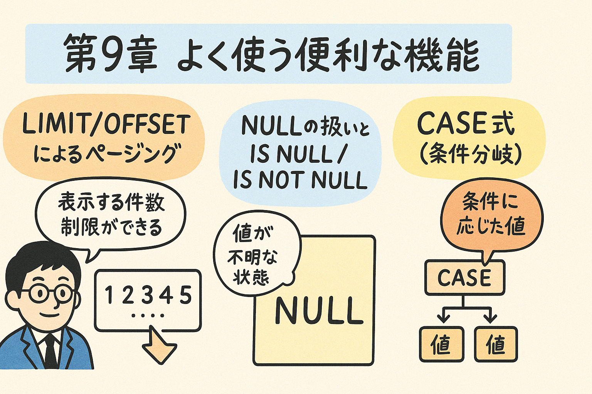

この第9章では、PostgreSQLでよく使用される便利な機能について学習します。結果セットの制限やページング処理、NULL値の適切な取り扱い方、条件分岐を行うCASE式など、実務でとても役立つ機能を解説します。
データベース操作を行う上で、頻繁に使用される便利な機能について学びます。これらの機能を習得することで、より効率的なクエリが書けるようになり、実務でのデータベース操作が格段に向上します。
大量のデータを一度に取得すると、アプリケーションのパフォーマンスが低下する可能性があります。特にWebアプリケーションなどでは、ユーザーに必要な分だけを少しずつ表示する「ページング」という手法がよく使われます。PostgreSQLでは、LIMITとOFFSET句を使用して効率的にページングを実装できます。
LIMIT句は、クエリの結果セットから返される行数を制限します。
-- 商品テーブルから最初の10件のみを取得
SELECT product_id, product_name, price
FROM products
ORDER BY product_id
LIMIT 10;
OFFSET句は、結果セットの何行目から取得を開始するかを指定します。
-- 商品テーブルから11件目から20件目を取得
SELECT product_id, product_name, price
FROM products
ORDER BY product_id
LIMIT 10 OFFSET 10;
効果的なページングのためには、以下のポイントを押さえましょう：
-- 1ページ目（最初の15件）
SELECT product_id, product_name, price
FROM products
ORDER BY product_id
LIMIT 15 OFFSET 0;
-- 2ページ目（16〜30件目）
SELECT product_id, product_name, price
FROM products
ORDER BY product_id
LIMIT 15 OFFSET 15;
-- 3ページ目（31〜45件目）
SELECT product_id, product_name, price
FROM products
ORDER BY product_id
LIMIT 15 OFFSET 30;
図9.1: LIMIT/OFFSETによるページング処理のイメージ
以下の要件を満たすSQL文を作成してください：
データベースにおけるNULLは「値がない」または「不明」を表します。通常の比較演算子（=, <, >など）ではNULLを適切に扱えないため、特別な演算子が必要です。
値がNULLかどうかを確認するには、IS NULL演算子を使用します。
-- 電話番号が登録されていない顧客を検索
SELECT customer_id, name, email
FROM customers
WHERE phone_number IS NULL;
値がNULLでないことを確認するには、IS NOT NULL演算子を使用します。
-- 電話番号が登録されている顧客を検索
SELECT customer_id, name, email
FROM customers
WHERE phone_number IS NOT NULL;
NULL値を扱う際の一般的な間違いと正しい書き方：
| 間違い | 正しい書き方 |
|---|---|
WHERE phone_number = NULL |
WHERE phone_number IS NULL |
WHERE phone_number != NULL |
WHERE phone_number IS NOT NULL |
WHERE phone_number = '' OR phone_number = NULL |
WHERE phone_number = '' OR phone_number IS NULL |
COALESCE関数は、最初のNULLでない引数を返します。これを使って、NULL値を代替値で置き換えることができます。
-- 電話番号がNULLの場合は「未登録」と表示
SELECT
customer_id,
name,
COALESCE(phone_number, '未登録') as phone
FROM customers;
以下の要件を満たすSQL文を作成してください：
CASE式はSQLにおける条件分岐を可能にする強力な機能です。プログラミング言語における「if-else」や「switch」文に相当します。
単純CASE式は、式の値と各WHEN句の値を比較します。
-- 商品カテゴリに応じた表示名を設定
SELECT
product_id,
product_name,
category_id,
CASE category_id
WHEN 1 THEN '食品'
WHEN 2 THEN '飲料'
WHEN 3 THEN '日用品'
ELSE 'その他'
END AS category_name
FROM products;
検索CASE式では、各WHEN句に任意の条件式を指定できます。
-- 価格帯に応じたラベルを設定
SELECT
product_id,
product_name,
price,
CASE
WHEN price < 1000 THEN 'エコノミー'
WHEN price >= 1000 AND price < 5000 THEN 'スタンダード'
WHEN price >= 5000 THEN 'プレミアム'
ELSE '未分類'
END AS price_category
FROM products;
-- 集計におけるCASE式の活用
SELECT
CASE
WHEN age < 20 THEN '10代'
WHEN age >= 20 AND age < 30 THEN '20代'
WHEN age >= 30 AND age < 40 THEN '30代'
WHEN age >= 40 AND age < 50 THEN '40代'
ELSE '50代以上'
END AS age_group,
COUNT(*) AS customer_count
FROM customers
GROUP BY age_group
ORDER BY age_group;
-- 条件付き更新
UPDATE employees
SET salary =
CASE
WHEN department = '営業部' THEN salary * 1.10
WHEN department = '開発部' THEN salary * 1.08
ELSE salary * 1.05
END;
図9.2: CASE式の評価フロー
以下の要件を満たすSQL文を作成してください：
これまで学んだ知識を組み合わせて、在庫状況に応じた表示を行うクエリを作成しましょう。
以下のような商品テーブル（products）があります：
| product_id | product_name | price | stock_quantity |
|---|---|---|---|
| 1 | ノートパソコン | 85000 | 10 |
| 2 | タブレット | 45000 | 0 |
| 3 | スマートフォン | 65000 | 5 |
| 4 | ワイヤレスイヤホン | 15000 | 0 |
| 5 | スマートウォッチ | 25000 | 3 |
以下の要件を満たすSQLクエリを作成してください：
ヒント: CASE式とCOALESCE関数、または単にCASE式だけでこの問題は解決できます。
SELECT
product_id,
product_name,
price,
CASE
WHEN stock_quantity = 0 THEN '売切'
ELSE '在庫: ' || stock_quantity || '個'
END AS stock_status,
CASE
WHEN price < 20000 THEN 'エコノミー'
WHEN price >= 20000 AND price < 50000 THEN 'ミドルレンジ'
WHEN price >= 50000 THEN 'ハイエンド'
END AS budget
FROM
products
ORDER BY
product_name;
実行結果は以下のようになります：
| product_id | product_name | price | stock_status | budget |
|---|---|---|---|---|
| 1 | ノートパソコン | 85000 | 在庫: 10個 | ハイエンド |
| 5 | スマートウォッチ | 25000 | 在庫: 3個 | ミドルレンジ |
| 3 | スマートフォン | 65000 | 在庫: 5個 | ハイエンド |
| 2 | タブレット | 45000 | 売切 | ミドルレンジ |
| 4 | ワイヤレスイヤホン | 15000 | 売切 | エコノミー |
このように、CASE式を使うことで、データの条件に応じた柔軟な表示が可能になります。
以下の問題に答えて、第9章の内容の理解度を確認しましょう。
問題1: テーブルから11件目から20件目のレコードを取得するSQLはどれですか？
問題2: NULL値を検索する正しいSQLはどれですか？
問題3: COALESCE関数の正しい説明はどれですか？
問題4: 以下のCASE式で、price = 3000の場合、どの値が返されますか？
CASE
WHEN price < 1000 THEN 'Low'
WHEN price < 5000 THEN 'Medium'
WHEN price < 10000 THEN 'High'
ELSE 'Premium'
END
問題5: ページング実装で必須の句はどれですか？（複数選択可）
この章では、実務でよく使われるSQLの便利な機能について学びました。次の章では、より高度なトピックとして、サブクエリやウィンドウ関数、ビューなどを学んでいきます。
練習問題に取り組み、実際にSQLを書いてみることで、今回学んだ機能をしっかりと身につけましょう。
以下のミニプロジェクトに取り組んで、今回学んだ機能を総合的に活用してみましょう：